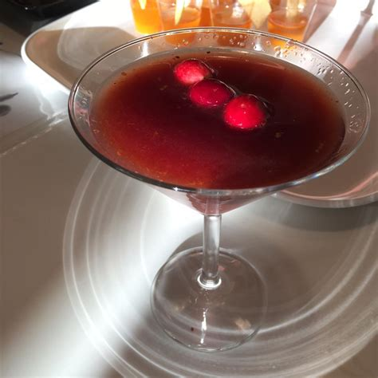

Saints and strangers cocktail recipe

Description
This cocktail is crisp and elegant, with deep, earthy notes and a ruby color
Ingredients
- 2 ounces of vodka
- 2 ounces of grape juice
- 1.5 ounces of pomegranate juice
- 0.5 ounces of french vermouth
- 0.5 ounces of cream of balsamic
- 0.25 ounces of cranberry juice
- 0.125 of a teaspoon of ground pink peppercorns
- 1 pinch of orange zest
- ice cubes
Steps
- Put the ingredients in the cocktail shaker
- Fill the shaker with ice
- Shake well
- Strain into a martini glass
- Sprinkle with orange zest